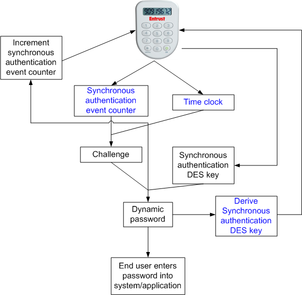
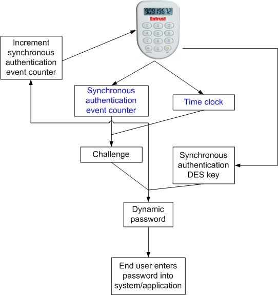
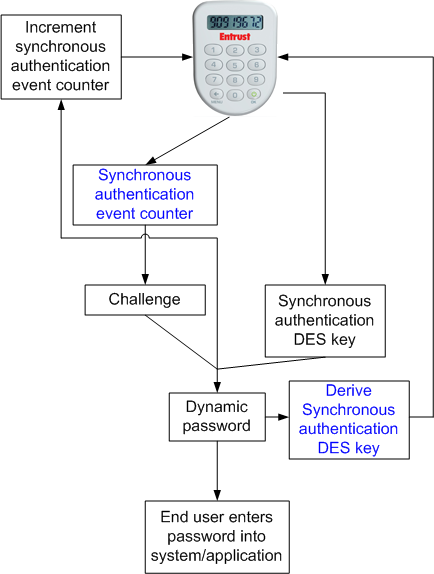
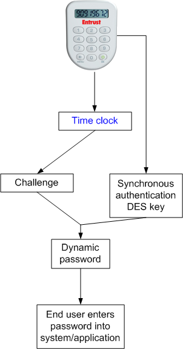
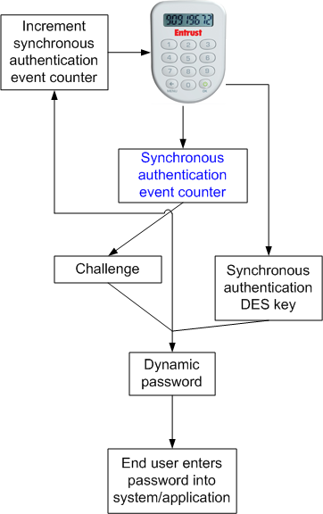

|
IdentityGuard Server 13.0 Administration Guide |
|
IdentityGuard Server 13.0 Administration Guide |
There are three authentication modes discussed in this topic: asynchronous, synchronous, and dual authentication mode.
When the user attempts to connect to a secure resource, the Entrust IdentityGuard server generates a random, numeric challenge and displays it to the user. The user enters the challenge into the Pocket Token, which generates the dynamic password using the challenge and its asynchronous authentication 3DES key. The user then enters the password into the secure resource.
In the meantime, the Entrust IdentityGuard server has used the challenge and the asynchronous authentication 3DES key for the Pocket Token (as stored in the Entrust IdentityGuard server) to generate the correct dynamic password. The Entrust IdentityGuard server compares the password generated by the Pocket Token with the password it generated. If they match, the user is granted access to the secure resource.
When the user attempts to connect to a secure resource, the Entrust IdentityGuard server generates a dynamic password. The user generates a dynamic password with the Pocket Token. The user then enters the password into the secure resource. The Entrust IdentityGuard server compares the password generated by the Pocket Token with the password it generated. If they match, the user is granted access to the secure resource.
Pocket Tokens in synchronous mode can use one to three variables to generate a dynamic password.
The variables involved are time, the synchronous authentication event counter, and the derived synchronous authentication DES key.
If the value of one or more of these variables is not in synchronization with the Entrust IdentityGuard server and the Pocket Token, the user authentication may fail. For more information, see Synchronization issues.
The following figure illustrates how the Pocket Token generates the synchronous dynamic password using three variables.

When the user enters the password into a secure resource, the Entrust IdentityGuard server calculates the synchronous dynamic password.
The Entrust IdentityGuard server calculates the dynamic password using the same algorithm as used by the Pocket Token. The calculation includes the system time and the values of the variables stored in the Entrust IdentityGuard server for that Pocket Token.
The variables involved can be either the synchronous authentication event counter and time, or the synchronous authentication event counter and the derived synchronous authentication DES key.
If the value of one or both of these variables is not in synchronization with the Entrust IdentityGuard server and the Pocket Token, the user authentication may fail. See “Synchronization issues” on page 30 for more information.
The following diagrams illustrate how the Pocket Token generates the synchronous dynamic password using two variables.
Synchronous mode with two variables - event counter and time clock

Synchronous mode with two variables - event counter and DES key

When the user enters the password into a secure resource, the Entrust IdentityGuard server calculates the synchronous dynamic password.
The Entrust IdentityGuard server calculates the dynamic password using the same algorithm as used by the Pocket Token. The calculation includes the system time and the values of the variables stored in the Entrust IdentityGuard server for that Pocket Token.
The Entrust IdentityGuard server then compares the passwords. If they match, the user is granted access to the secure resource, and the Entrust IdentityGuard server increments the stored value of the synchronous authentication event counter, and derives and stores the new value for the synchronous authentication DES key (if that variable was used).
Synchronous authentication with one variable uses either time or the synchronous authentication event counter as the only variable.
If the Pocket Token internal clock is not in synchronization with the Entrust IdentityGuard server’s system clock, or if the Pocket Token synchronous authentication event counter value is not in synchronization with the value stored in the Entrust IdentityGuard server for that token, the user authentication may fail. For more information, see Synchronization issues.
The following diagrams illustrate how the Pocket Token generates the synchronous dynamic password using one variable.
Synchronous mode with one variable - time clock

Synchronous mode with one variable - event counter

When the user enters the password into a secure resource, the Entrust IdentityGuard server calculates the synchronous dynamic password.
The Entrust IdentityGuard server calculates the dynamic password using the same algorithm as used by the Pocket Token. The calculation includes the system time and the values of the variables stored in the Entrust IdentityGuard server for that Pocket Token. The Entrust IdentityGuard server then compares the passwords. If they match, the user is granted access to the secure resource, and the Entrust IdentityGuard server increments the stored value of the synchronous authentication event counter (if that was the variable used).
Dual mode allows the user to choose whether to use the asynchronous (challenge/response) or synchronous (response-only) authentication mode, based on the security administrator’s recommendations. Users can switch their Entrust Pocket Tokens from one mode to the other. See Change authentication mode on a Pocket Token.